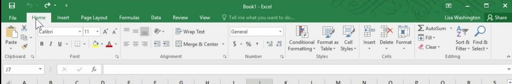
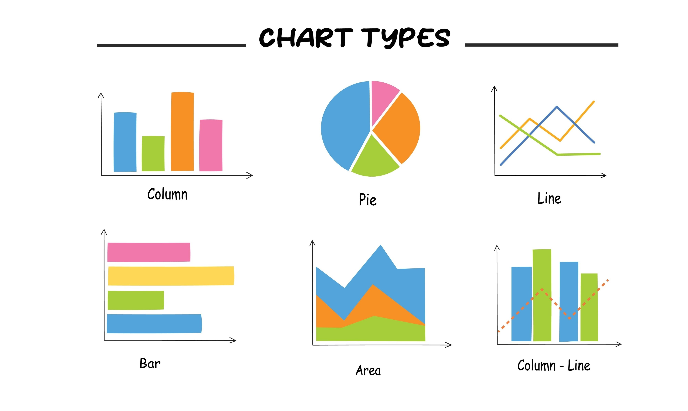

الاشرطة Bars
ما هي الاشرطة؟:-
هي الاشرطة الموجودة فوق في واجهة البرنامج و يوجد العديد من الاشرطه.

- شريط العنوان (Title Bar): هو أول شريط بالاعلى و يوجد عليه اسم الملف و ايضاً ايقونات X / □ / -.
- شريط القوائم (Menu Bar): هو شريط يحتوي على عدة قوائم مثل File و Home و Insert و Format و Data و سيتم شرح كل واحدة منهم لاحقاً.
- شريط الاوامر: موجود اسفل شريط القوائم و موجود لعمل اوامر.
- شريط الصيغه: هو اخر شريط و يوجد به Fx و يمكن من خلالها عمل الدوال Functions عند الضغط على الخلية ثم عمل الدالة و بجانبها مرجع الخلية.
شرح كل القوائم في (Menu Bar):-
1-File:-
- إنشاء ملف جديد (New):- يمكنك فتح دفتر عمل (Workbook) فارغ تماماً او بالضغط على زر الاختصار Ctrl + N.
- فتح ملفات موجودة (Open):- للوصول إلى الملفات التي قمت بحفظها مسبقاً على جهازك.
- حفظ العمل (Save / Save As):- لحفظ التعديلات على نفس الملف، أو حفظ نسخة جديدة باسم مختلف أو بصيغة مختلفة (مثل تحويل الإكسيل إلى PDF) و يمكن ايضاً الحفط من المفاتيح Ctrl + S.
- طباعة الملف (Print):- من هنا يمكنك ضبط إعدادات الطباعة، مثل اختيار الصفحات، حجم الورق، واتجاه الصفحة (طولي أو عرضي).
2-Home:-
- تنسيق النصوص والخطوط (Font):- يمكنك تغيير نوع الخط، حجمه، ولونه، بالإضافة إلى جعل الكلام سميكاً (Bold) أو مائلاً (Italic).
- المحاذاة (Alignment):- تتيح لك وضع النص في وسط الخلية أو يمينها أو يسارها، كما تشمل خاصية Merge Cell & Center لدمج أكثر من خلية في خلية واحدة كبيرة.
- تنسيق الأرقام (Number):- يمكنك تحويل الرقم إلى عملة، أو نسبة مئوية، أو تاريخ، والتحكم في عدد الأصفار بعد العلامة العشرية.
- التنسيق الشرطي (Conditional Formatting):- خاصية قوية تلون الخلايا تلقائياً بناءً على قيمتها.
3-Insert:-
- الجداول (Table):- تستخدم لتحويل مجموعة من البيانات العادية إلى جدول احترافي يسهل ترتيبه وفلترته وتنسيقه تلقائياً.
- الرسوم التوضيحية (Illustrations):- من هنا يمكنك إضافة الصور Pictures، الأشكال الهندسية Shapes، والأيقونات، أو حتى لقطات شاشة Screenshot لبرامج أخرى مفتوحة.
- المخططات والرسوم البيانية (Charts):- تتيح لك تمويل الأرقام الصماء إلى رسومات مرئية مثل الأعمدة Column charts أو الدوائر Pie charts لتسهيل فهم النتائج.

- انواع المخططات (charts) مخطط عمودي، مخطط خطي، مخطط دائري، مخطط شريطي، مخطط مساحي، مخطط مبعثر، مخططات اسهم، مخطط سطحي، مخطط دائري مجوف، مخطط فقاعي، مخطط نسيجي
- اهمية الرسم البياني :- هو رسم تخطيطي لتمثيل البيانات بطريقة بيانية سهلة واضحة، معرفة نسبة النجاح للطلبة، قياس قيمة ارباح وخسائر شركة او مؤسسة، مقارنة بين أكثر من منتج من حيث المبيعات، اتخاذ القرارات الهامة والمفاضلة بين البدائل، المقارنة بين الشركات من حيث نسبة المبيعات ونسبة الارباح والخسائر
- خطوط المؤشر (Sparklines):- هي عبارة عن رسوم بيانية صغيرة جداً يتم رسمها داخل خلية واحدة لتبين اتجاه البيانات (صعوداً أو هبوطاً) بجانب الأرقام.
- الارتباطات التشعبية (Link):- لإدراج رابط يوجهك إلى موقع ويب أو مكان آخر داخل نفس ملف الإكسيل.
- النصوص والرموز (Text & Symbols):- لإضافة صناديق نصوص Text Box، أو كتابة فنية WordArt، أو إدراج معادلات رياضية ورموز غير موجودة في لوحة المفاتيح.
4-Format
- تغيير ارتفاع الصفوف (Row Height):- يمكن من قائمة تنسيق Format تغيير ارتفاع العمود، اولاً من قائمة تنسيق صفوف Rows و ثم اختيار ارتفاع Height فتظهر نافذة يتم تحديد ارتفاع الصف بها، او بالوقوف عند بداية الصف المراد تغيير إرتفاعه حتى يتغيير شكل السهم ثم تحريك الماوس أعلى و أسفل للحصول على الارتفاع المطلوب، او تحديد الصف ثم الضغط على الزر الأيمن للماوس و اختيار أمر ارتفاع الصف Row Height فتظهر نافذة يتم تحديد الارتفاع بها.
-
تغيير عرض الأعمدة :-
نحدد العمود ونختار من قائمة تنسيق ← أعمدة ← عرض
(Format → Column → Width) فتظهر نافذة يتم تحديد عرض العمود بها، أو بالوقوف عند رأس العمود المراد تغيير عرضه حتى يتغير شكل السهم ثم تحريك الماوس يمين ويسار للحصول على العرض المطلوب، أو تحديد العمود ثم الضغط على الزر الأيمن للماوس واختيار أمر عرض العمود فتظهر نافذة يتم تحديد العرض بها. -
لإخفاء صف أو عمود :-
يتم تحديد الصف أو العمود المراد إخفاؤه ثم إختيار قائمة تنسيق ← صفوف أو أعمدة ← إخفاء
(Format → Row Or Column → Hide)، أو تحديد الصف أو العمود ثم الضغط على الزر الأيمن للماوس واختيار أمر إخفاء. -
لإظهار صف أو عمود :-
يتم تحديد الصفين أو العمودين المجاورين ثم إختيار قائمة تنسيق ← صفوف أو أعمدة ← إظهار
(Format → Row Or Column → Unhide)، أو تحديد الصفين أو العمودين المجاورين ثم الضغط على الزر الأيمن للماوس وإختيار أمر إظهار. - لحذف صف أو عمود :- يتم تحديد الصف أو العمود ثم الضغط على الزر الأيمن للماوس وإختيار حذف Delete، أو يتم تحديد الصف أو العمود ثم إختيار قائمة حذف Delete.
-
إعادة تسمية ورقة العمل :-
يتم تحديد ورقة العمل المراد تغيير اسمها من قائمة تنسيق ← ورقة ← إعادة تسمية
(Format → Sheet → Rename). -
تنسيق الحدود Borders :-
عند فتح ملف الإكسل تكون حدود الخلايا حدود وهمية أي لا تظهر في الطباعة ولإظهار الحدود يتم تحديد مجموعة الخلايا المراد إظهار حدودها ويتم عمل الآتي:
من شريط التنسيق نضغط على أيقونة Borders.
أو من قائمة تنسيق ← خلايا ← حدود أو Format → Cells → Border.
ثم نختار نمط الحد من مجموعة النمط (خط رفيع - خط سميك - .........) ثم نختار لون الحد من Color ثم نضغط Ok. - تنسيق النص داخل الخلايا :- مثل تنسيقات Word تماماً (حجم الخط - لون الخط - نوع الخط).
5-Data
-
فرز البيانات :-
فرز تصاعدي Sort Ascending :- لترتيب البيانات تصاعدياً
من إختيار قائمة بيانات ← فرز تصاعدي
Data → Sort → Ascending -
فرز تنازلي Sort Descending :- لترتيب البيانات تنازلياً
من إختيار قائمة بيانات ← فرز تنازلي
Data → Sort → Descending